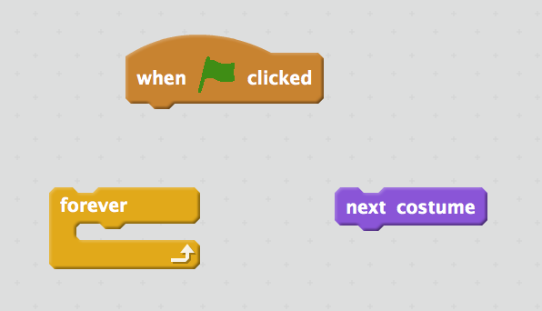

Activity 1
- Go to Scratch.mit.edu to the Scratch editor
- Click file->Upload from your computer
- Navigate to your year group folder then "Scratch" on Open drive
- Select the file: Scratch-Starter-Activity 1
Click the arrow when ready
The warm up: What to do
Arrange the blocks in the script areas so that the coin spins when the green flag is clicked
When done:
click here to proceed to the next challenge.Level 2: What to do
- Move Mario with arrow keys
- Animate Mario leg movement
When done:
Click here to proceed to the next challenge.The Ultimate Challenge: What to do


Make Mario jumps up when space key is pressed - that is:
- Mario jumps to the air and back down again.
- When Mario is up, his arm is up(see Mario's costumes).
Click here to the content page.